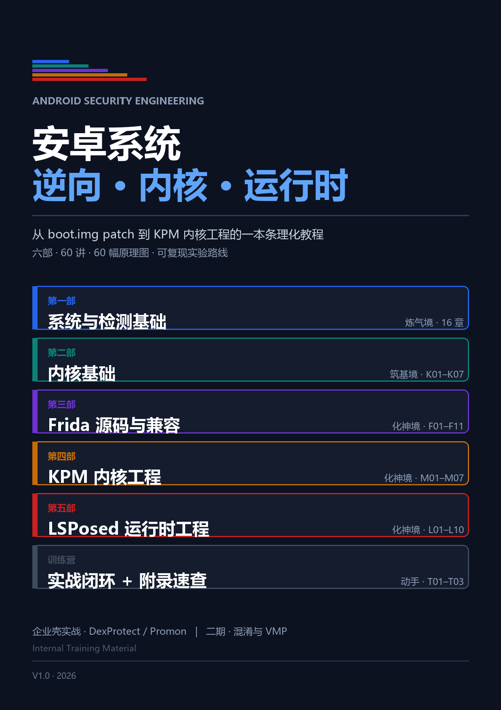

安卓系统
逆向 · 内核 · 运行时
从 boot.img patch 到 KPM 内核工程的一本条理化教程

65讲正文
8个部分
60幅原理图
16组动图演示
3条主线
这一版新增了什么
每一讲都补上了现场引子、逐拍拆解、可复现实验、对照表和反直觉要点，把"是什么"讲成"怎么一步步发生"。 另外做了 16 组逐帧动图：启动链、COW 缺页、Inline Hook、Stalker、Text Shadow、 SELinux 判定、Binder、DEX 回填、VMP 解释循环……网页版可以播放、暂停、逐帧点选，GitBook 版是自动循环的 GIF。
这本书讲什么
这不是一本“技巧合集”，而是一本按能力阶梯组织的工程手册。全书围绕三条主线展开： 可信链（怎么验证）、运行链（怎么执行）、检测链（怎么发现）。 所有技术，都是在这三条线上的某个点做文章。
炼气境
第一部 · 系统与检测基础
从 boot.img 一路到 dex：把“系统怎么跑起来”讲透，后面所有内容都挂在这条链上。
筑基境第二部 · 内核基础
进程、内存、异常、VFS、追踪、BTF、KASLR——做 KPM 之前必须补的七块地基。
化神境第三部 · Frida 详解：源码与兼容工程
不解剖 API，只解剖机制：从启动到注入、从 IPC 到 linker、从 Stalker 到线程结构体。
化神境第四部 · 内核模块详解：KPM 内核工程
进入 EL1：模块生命周期、只读观测面、Text Shadow、单步与硬件断点、SELinux。
化神境第五部 · LSPosed 详解：运行时工程
LSPlant、回调链、DEX 生命周期、账本收口、版本适配、侧信道与验证矩阵。
实战企业壳实战 · 持续更新
DexProtect 的检测流水线与加固结构拆解；Promon 与更多顶级检测壳持续更新。
进阶二期规划 · 混淆与 VMP
编译原理（词法、CFG、IR 优化）→ VMP 分析（转 IR）。工具会过期，抽象能力不会。
动手实战训练营
三组带交付物的训练任务：造一道检测再绕过它 / 挖一个算法 / 做一次隐藏与检测的完整循环。
怎么读
- 先建模型，再记细节。模型对了，细节可以查；模型错了，细节全是散的。
- 每个结论配一个可证伪实验。不做实验的“理解”，多半是错觉。
- 改完必须回归。任何“应该没问题”的改动，都要用同一套用例重跑。
- 遇到过程，先看动图。16 组逐帧演示把“谁先谁后”摆出来，再回头读文字拆解。
把地图画对，把实验做扎实，剩下的只是时间问题。